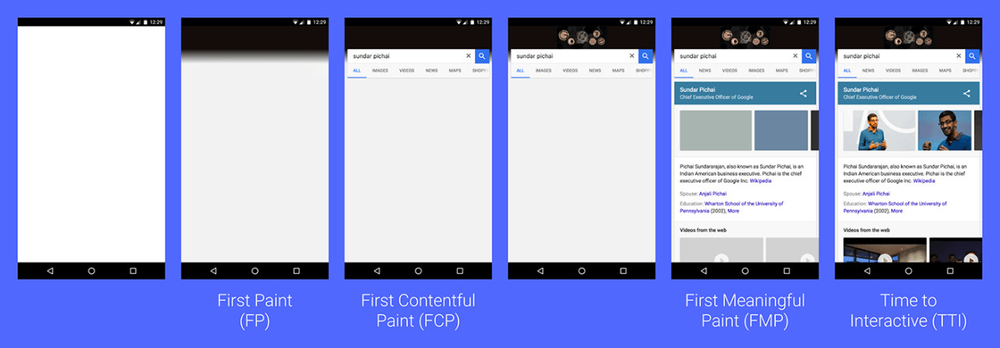

性能优化——专业术语
前言
本人平时学习及收集内容，欢迎参入一起讨论。
内容
一、前端性能指标
页面从加载到展示的过程图：

- 首次绘制（First Paint）
- 首次内容绘制（First Contentful Pain）
- 最大内容绘制（Largest Contentful Paint）
- 首次有效绘制（First MeaningFull Paint）
- 首屏时间（Speed Index）
- 首次 CPU 空闲时间（First CPU Ide）
- 完全可以交互时间（Time to Interactive）
- 最大估计输入延时（Max Potential First Input Delay）
- 首次输入延迟（First Input Delay）
1.1 首次绘制（FP）
FP（全称“First Point”，翻译） 是时间线上的第一个“时间点”，它代表浏览器第一次向屏幕传输像素的时间，也就是页面在屏幕上首次发生视觉变化的时间。
注意：FP 不包含默认背景绘制，但包含非默认的背景绘制。
1.2 首次内容绘制（First Contentful Pain）
FCP（全称“First Contentful Paint”，翻译为“首次内容绘制”），思义，它代表浏览器第一次向屏幕绘制**“内容”**。
注意：只有首次绘制文本、图片（包含背景图）、非白色的
canvas或 SVG 时才算作 FCP。
FP 与 FCP 这两个指标之间的主要区别是：FP 是当浏览器开始绘制内容到屏幕上的时候，只要在视觉上开始发生变化，无论是什么内容触发的视觉变化，在这一刻，这个时间点，叫做 FP。
相比之下，FCP 指的是浏览器首次绘制来 DOM 的内容。例如：文本，图片，SVG，canvas 元素等，这个时间点叫 FCP
FP 和 FCP 可能是相同的时间，也可能是先 FP 后 FCP。
1.3 最大内容绘制（Largest Contentful Paint）
LCP（全称“Largest Contentful Paint”） 表示可视区“内容”最大的可见元素开始出现在屏幕上的时间点。

了解和测量网站真实的性能其实非常困难，像load和DOMContentLoaded不会告诉我们用户什么时候可以在屏幕上看到内容。而FP和FCP又只能捕获整个渲染过程的最开始，FMP更好一点，但是它的算法比较复杂，而且前面说了，有时候不准。
根据 W3C Web 性能工作组的讨论和 Google 的研究，发现测量页面主要内容的可见时间有一种更精准且简单的方法是查看什么时候渲染最大元素。
以上图为例，绿色方块的区域是内容最大的元素，所以在这个例子中，LCP 等于这个元素开始渲染的时间。
现在我们了解了 FP、FCP、FMP 以及 LCP 这几个术语，FP 与 FCP 可以让我们知道让我们知道，我们的产品何时开始渲染；而 FMP 与 LCP 可以让我们了解我们的产品何时“有用”，站在用户的角度，FMP 与 LCP 可以表示我们的产品需要多久才能体现价值。
1.4 首次有效绘制（FMP）
FMP（全称“First Meaningful Paint”，翻译为“首次有效绘制”） 表示页面的“主要内容”开始出现在屏幕上的时间点。它是我们测量用户加载体验的主要指标。
FMP 本质上是通过一个算法来猜测某个时间点可能是 FMP，所以有时候不准。
图 3 给出了 FP、FCP、FMP 之间的比较。

1.5 首屏时间
首屏时间，它表示填满首屏页面所消耗的时间，首屏时间的值越大，那么加载速度越慢
1.6 首次 CPU 空闲时间（First CPU Idie）
首次 CPU 空闲时间（First CPU Idle），也称为 First interacitve，它表示页面达到最小化可交互的时间，也就是说并不需要等到页面上的所有元素都可以交互，只要可以对大部分用户输入做出响应即可。要缩短首次 CPU 空闲时长，我们就需要尽可能快加载完关键资源，尽可能快地渲染出来首屏内容。
1.7 完全可交时间
完全可交互时间（Time to Interactive），简称 TTI，它表示页面中所有元素都达到了可交互的时长。简单理解就是这个时候页面的内容已经完全显示出来了，所有的 JavaScript 事件已经注册完成，页面能够对用户的交互做出快速响应，通常满足响应速度在 50 毫秒以内。如果要解决 TTI 时间过久的总是，我们可以推迟执行一些和生成页面无关的 JavaScript 工作。
1.8 最大估计输入延时（Max Potential First Input Delay）
最大估计输入延时（Max Potential First Input Delay），这个指标是估计你的 Web 页面在加载最繁忙的阶段，窗口中响应用户输入所需的时间，为了改善该指标，我们可以使用 WebWorker 来执行一些计算，从而释放主线程。另一个有用的措施是重构 CSS 选择器，以确保它们执行较少的计算。
1.9 首次输入延迟（First Input Delay）
首次输入延迟（First Input Delay），FID 指的是用户首次与产品进行交互时，我们产品可以在多长时间给出反馈。TTI 可以告诉我们网页什么时候可以开始流畅地响应用户的交互，但是如果用户在 TTI 的时间内，没有与网页产生交互，那么 TTI 其实是影响不到用户的，TTI 是不需要用户参与的指标，但如果我们真的想知道 TTI 对用户的影响，我们需要 FID。不同的用户可能会在 TTI 之前开始与网页产生交互，也可能在 TTI 之后才与网页产生交互。所以对于不同的用户它的 FID 是不同的。如果在 TTI 之前用户就已经与网页产生了交互，那么它的 FID 时间就比较长，而如果在 TTI 之后才第一次与网页产生交互，那么他的 FID 时间就短。
捕获 FID 比较简单，我们只需要在网页的 head 标签里注册一个事件（click、mousedown、keydown、touchstart、pointerdown），然后在事件响应函数中使用当前时间减去事件对象被创建的时间即可。
performance.now() - event.timeStamp
二、后端关注的指标
- QPS
- TPS
- 并发数
- 吐吞量
- PV
- UV
- DAU
- MAU
- 系统吞吐量评估
2.1 QPS
QPSQueries Per Second是每秒查询率，是一台服务器每秒能够相应的查询次数，是对一个特定的查询服务器在规定时间内所处理流量多少的衡量标准，即每秒的响应请求数，也即是最大吞吐能力。
2.2 TPS
TPS：也就是事务数/秒。一个事务是指一个客户机向服务器发送请求然后服务器做出反应的过程。客户机在发送请求时开始计时，收到服务器响应后结束计时，以此来计算使用的时间和完成的事务个数。
QPS 和 TPS 区别
- TPS 即每秒处理事务数，包括了用户请求服务器、服务器自己的内部处理、服务器返回给用户
- QPS 基本类似于 TPS，但是不同的是，对于一个页面的一次访问，形成一个 Tps；但一次页面请求，可能产生多次对服务器的请求，服务器对这些请求，就可计入“QPS”之中。
2.3 并发数
并发数：指系统同时能处理的请求数量，同样反应了系统的负载能力。这个数值可以分析机器 1s 内的访问日志数量来得到。
2.4 吐吞量
吐吞量：吞吐量是指系统在单位时间内处理请求的数量，TPS、QPS 都是吞吐量的常用量化指标
系统吞吐量要素
一个系统的吞吐量（承压能力）与 request（请求）对 cpu 的消耗，外部接口，IO 等等紧密关系。
单个 request 对 cpu 消耗越高，外系统接口，IO 影响速度越慢，系统吞吐能力越低，反之越高。
重要参数
QPS(TPS)，并发数，响应时间
- QPS(TPS)：每秒钟 request/事务 数量
- 并发数：系统同时处理的 request/事务数
- 响应时间：一般取平均响应时间
关系
QPS(TPS)=并发数/平均响应时间
一个系统吞吐量通常有 QPS(TPS)，并发数两个因素决定，每套系统这个两个值都有一个相对极限值，在应用场景访问压力，只要某一项达到系统最高，系统吞吐量就上不去了，如果压力继续增大，系统的吞吐量反而会下降，原因是系统超负荷工作，上下文切换，内存等等其他消耗导致系统性能下降。
2.5 PV
PV：页面访问量，即页面浏览量或点击量，用户每次刷新即被计算一次。可以统计服务一天的访问日志得到。
2.6 UV
UV：独立访客，统计 1 天内访问某站点的用户数。可以统计服务一天的访问日志并根据用户的唯一标识去重得到。响应时间（RT）：响应时间是指系统对请求作出响应时间，一般取平均响应时间。可以通过 Nginx、Apache 之类的 Web Server 得到。
2.7 DAU
DAU：日活跃用户数量。常用于反映网站、互联网应用或网络游戏的运营情况。DAU 通常统计一日（统计日）之内，登录或使用了某个产生的用户数（去除重复登录的用户），与 UV 概念相似
2.8 MAU
MAU：月活跃用户数量，指网站、app 等去重后的月活跃用户数量。
2.9 系统吞吐量评估
我们在做系统设计的时候就需要考虑 CPU 运算，IO，外部系统响应因素造成的影响以及对系统性能的初步预估。
而通常情况下，我们面对需求，我们评估出来的 QPS，并发数之外，还有另外一个维度：日 PV。
通过观察系统的访问日志发现，在用户量很大的情况下，各个时间周期内的同一时间段的访问流量几乎一样。比如工作日的每天早上，只要能拿到日流量图和 QPS 我们就可以推算日流量。
通常的技术方法：
- 找出系统的蚊帐 TPS 和日 PV，这两个要素有相对比较稳定的关系（除了放假、季节性因素影响之外）
- 通过压力测试或者经验预估，得出最高 TPS，然后跟进 1 的关系，计算出系统最高的日吞吐量。
参考资料
- Web 性能领域常见的专业术语
- 加餐三｜加载阶段性能：使用 Audits 来优化 Web 性能
- 网站性能指标这么多，你到底选对了吗？
- QPS、TPS、并发用户数、吞吐量关系
- 前端性能优化之谈谈常见的性能指标及上报策略
- 性能体验和质量指标
- 淘宝是如何缩短首屏时间、降低服务器压力的？边缘计算告诉你答案！
- 如何使页面交互更流畅
- 你的函数有多快？使用 performance 监控前端性能
- 【第 2023 期】从 2.9 秒到 0.6 秒，信息流首屏提效 80%的秘诀
- 京喜小程序体验评分优化实践
联系作者
平凡世界，贵在坚持。